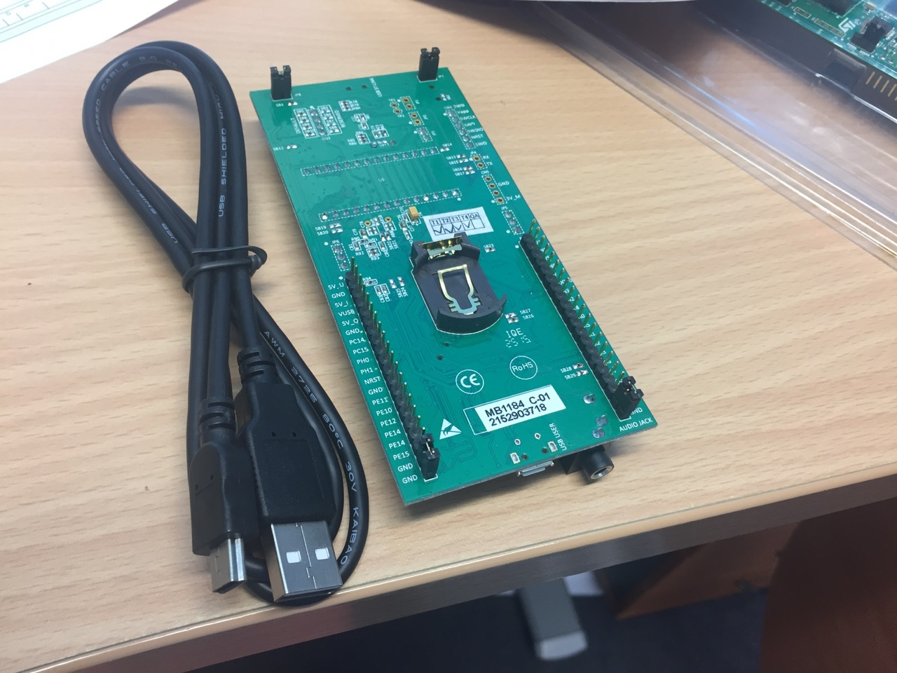

Lab 1: Introduction
Outline
In this week’s lab you will:
- get your discoboard and connect it to the computer
- create your first program using the VSCode IDE
- compile, run and debug your first program
Introduction
The labs for this course have a few different recurring parts, and they will be presented using different coloured boxes:
General notes & information will be highlighted in a blue box.
Sometimes you need to think about stuff before you go ahead. If you see something in a pink box (because your brain is pink—sortof), that’s your clue to pause and think—how do you expect the next part will work? Take a moment to think before you blaze away and start coding, because then you can check whether you really understand what’s going on or whether you’re just copy-pasting stuff without really understanding it. If you don’t understand it perfectly, that’s ok—ask your lab neighbour (or your tutor) to help you understand.
We don't want you to learn in isolation. The lab sessions will have plenty of chances to discuss things with others. If you see a green box, read it and then discuss the question with your lab neighbour (someone sitting near you). In this course, as in most (all?) others, your fellow students are your best resource. If you have a problem with your work, or if there’s something you don’t understand, the first thing you should do (after thinking about it for at least ten seconds) should be to ask another student. They might not know the answer straight away, but even if they don’t, you might find that between the two of you you can work it out. If you can’t, then of course you can ask the teachers—but your teacher might not be able to help you immediately. This also means that if you’re helping one of your fellow students understand something, put yourself in their shoes. It takes courage to ask a question, especially if you feel like everyone else in the lab knows what’s going on (although that certainly isn’t true). Be gentle and helpful in your answers, and remember that you can be honest about stuff that you don’t know—you’re all on this journey together.
Computer organisation and program execution are huge topics, and mastering them takes a lifetime. So the material in these lab sessions will only cover the fundamentals. However, sometimes there are interesting extension exercises you might try if you want to go deeper, and these will be in a purple box. If you don’t know how to approach the problems in the purple boxes, that’s ok too.
These coloured boxes will be used consistently through the lab material, so take a moment to familiarise yourself with what the different colours mean, or at least remember that you can come back here and check at any time.
Exercise 0: setting up the software environment
Setting things up deserves it’s own page. Go have a look, see you back here when you’re done :)
Exercise 1: getting your discoboard
During this session we will give you a discoboard and USB cable of your very own—this is yours to keep forever. How exciting!

Exercise 2: connecting the board to the computer
The discoboard connects to your computer via a mini-USB cable. We also have USB-C to USB-A adapters if you have a new MacBook with USB-C ports.
As far as electronics go, this board isn’t super fragile, but you’ll still need to be careful with it when you’re handling it and carting it around. That’s why you got it in a plastic container with an antistatic bag—keep the discoboard in it's antistatic bag and put that, and your cable, in the plastic container. If you’re not used to handling electronics, here are a few tips:

- handle it by the edges (as in the photo)
- don’t touch any of the pins or little microchips on the board
- keep the plastic case to carry the board around
- be careful of static electricity—if you’re the sort of person who regularly shocks themselves, then you need to ground yourself before touching the board
- the USB cable you received will only fit in one end of the board (even though there’s a different USB connector on the other end) so if it’s not going in, try the other end—don’t try to force it!
Once you’ve received your new discoboard, plug it in to your computer—the full-size USB end goes into the computer, and the mini end of the USB cable goes into the connector on the discoboard (up the “top” end, closer to the LCD screen).
Exercise 3: your first discoboard program
With your lab neighbour, open up the main VSCode documentation website. Discuss with them: what makes a good documentation website?
Now that you’ve connected your board to the computer it’s time to turn everything on and see if it works. This exercise is a bit longer, so it’s broken down into stages: clone, edit, build & run.
Fork & clone
In this course all the lab templates are stored in Git - with each lab having its own repo. If you have never used Git before don't fear - it is built into macOS and we will give you a quick tutorial (or you can ask some of the senior students who have used Git previously). We recommend that you have a "discoboard" folder somewhere on your computer where you can keep all of your stuff related to these activities.
Ok, now here goes:
- clone the lab 1 template to your local machine
You can do the “git clone” step in the terminal, or your favourite git client, it doesn’t matter. If you like, you can use VSCode’s built-in git support: here’s a link to the general docs on this view, and here’s the specific instructions on how to clone a repo.
After you’ve cloned, open the top-level folder in VSCode. If you used the
integrated VSCode git clone command, this will happen automatically. If you
cloned the repo some other way, you’ll need to open the folder yourself with
File: Open... in the command palette. Once you’ve done that you should see
something like this:

Again, the VSCode docs have a good explanation of the user interface.
Now, in the Explorer view, open the src/main.S file, you should see
something like this:

Based on your experience using rPeANUt, what do you think this program does?
Edit
Add some code so that main.S looks like this:
.syntax unified
.global main
.type main, %function
main:
mov r1, 0
loop:
add r1, 1
b loop
Save the file when you’re done. Don’t worry if you don’t understand all the details at this stage—the goal for this week’s lab is just to plug things in, turn them on, and make sure that everything’s working. If you have any problems, let your teacher know now.
Build
You can build (or compile—they mean the same thing in this context) your
program using the Build command (PlatformIO: Build in the command
palette).
You’ll see some stuff printed to the
terminal (near
the bottom of your VSCode window), and when it’s done it should look something
like this:
If you’re running this process for the first time, PlatformIO will need to download some more stuff—again, this might take several minutes (perhaps up to half an hour if everyone’s hitting the servers at once) Be patient, you only have to do this once on any given computer, the next time it’ll be super-quick.
While you’re waiting, how about you do a bit of research about how to use Git - particuarly if you have never used it before.
Upload
You’ve built the program on your laptop/desktop (or phone, or
toaster—whatever machine VSCode is running on). To run it on your discoboard
you need to upload it with the Upload (PlatformIO: Upload). Again,
afterward it should look something like this:

If you get errors at this point, then they’ll be printed (probably in red) in the terminal. Try and figure out what’s going wrong yourself.
The most common error you might encounter at this stage is a flash failure error: Error: init mode failed (unable to connect to target). This is likely to be the "first upload" problem. Head across to the flash failure troubleshooting section of the software setup to look at how to fix this issue.
Run
To run the program on your discoboard, we’ll use VSCode’s built-in debugger—an invaluable tool for making things work right when we’re writing programs for the discoboard. You may have used a debugger like this before, or you may not have—that’s ok! We’ll lead you through the basics in the labs over the next couple of weeks.
Open up the Debug view and make sure the ARM On-Chip Debug configuration is selected in the drop-down menu (if you select a different config, e.g. the PlatformIO config, then it won’t work):

Click the green play button to run your program, pausing (“breaking”) on entry.

The highlighted yellow line of assembly code (shown in the above screenshot)
represents where the program is “up” to. When you first start it running, the
IDE creates a breakpoint at the
main: label in your program, so when your program reaches that line of code it
stops and waits for further instructions (from you!).
When the program first starts executing it will likely breakpoint/pause in the startup_stm32l476xx.S file. You can just use the debugger controls to step through until you break on the main: label in your program.
What is the purpose of the startup_stm32l476xx.S file? Try to figure out what it does and why it is used when your program first loads.
At this point, you can step through the code one instruction at a time using the debug controls:

Discuss with your neighbour—what do all these debug control buttons do? Play around with them together—can you see what effect they’re having on the program executing on your discoboard? Are you pumped?
If you want your program to keep running (i.e. to “unpause” the program) just hit the green play button (although it’s called continue rather than play when you’re debugging, because it continues after you last paused the execution). Once it’s running, you can pause it again by hitting the pause button, and even stop it with the red stop button.
Once it’s stopped, you can restart the whole process again in a new debugging session by going back to the start of these instructions.
Debuggers are always a bit flaky; sometimes they get stuck, sometimes the “current line indicator” disappears, sometimes it doesn’t stop at the breakpoints correctly, or some other problem. You’ll get the hang of recognising when things have gone wrong & how to fix them, so don’t be too frustrated if things don’t work right. Remember that it’s ok to use the stop or restart buttons to try and get things back on track, or (worst-comes-to-worst) unplug and re-plug your discoboard.
You can also examine the values of your registers in the CORTEX REGISTERS viewlet under the Debug View (see the bottom left corner in the below screenshot):
If you want to control exactly where the system pauses for debugging, you can set a new breakpoint by double-clicking in the left-hand “gutter” (or margin) of the code view in the IDE. You should see a little red dot appear:
The program isn’t running on your laptop—it’s running on your discoboard. What does that mean? What are the implications for the way you run & debug your program?
Summary
Congratulations! In this lab you
- plugged in your board
- opened up the IDE
- built, uploaded, run & debug a basic program on your board
Next week, you’ll start thinking about what the assembly code you wrote does, and what it actually looks like in the memory of your discoboard.
Make sure you pack up your board and USB cable carefully.
There’s no specific extension content this week. Having said that, the board is now yours, so you can program it however you like.